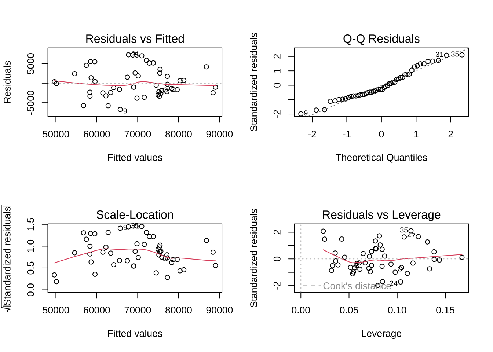

3 線形回帰分析
はじめに, コードの可読性を高めるため, パッケージtidyverseをロードしておく.
例えば, tidyverse内にあるパッケージmagrittrの提供する機能であるパイプ (演算子) %>% を関数head()と組合せて使用し, 出力量を抑える.
3.1 重回帰分析の基本操作
データ1: 1ルーム賃貸マンション
- 1ルーム賃貸マンション, 家賃データ, 50件 (仮想データ)
- rent: 月額家賃 (円)
- area: 専有面積 (平米)
- yrs: 築後年数 (年)
- dist: 最寄駅からの徒歩距離 (m)- データの読み込み
rentdat <- read.csv("rentdat.csv", header = T)
head(rentdat) # R標準の記法
#> rent area yrs dist
#> 1 60000 18.45 8.73 837.46
#> 2 61000 19.84 13.33 520.86
#> 3 74000 22.45 8.26 433.77
#> 4 77000 26.81 5.94 1192.32
#> 5 59000 17.62 3.85 815.17
#> 6 86000 26.68 4.19 373.87
# または, パイプ (%>%) を利用して,
# rentdat %>% head()実行に先立ち, pairs()やcor()を使い, 変数間の従属性や, 相関係数の大きさを確認する.
cor(rentdat)
#> rent area yrs dist
#> rent 1.0000000 0.84098526 -0.16885266 -0.36727009
#> area 0.8409853 1.00000000 0.05454398 -0.02291733
#> yrs -0.1688527 0.05454398 1.00000000 -0.05812975
#> dist -0.3672701 -0.02291733 -0.05812975 1.00000000
# パイプ (%>%) を利用しても良い
# rendat %>% pairs()
# rentdat %>5 cor()- 回帰実行
関数lm()を使用して最小二乗法による適合を行う. 実行結果はsummary()で確認する.
res_lm <- lm(rent ~ ., data = rentdat)
summary(res_lm)
#>
#> Call:
#> lm(formula = rent ~ ., data = rentdat)
#>
#> Residuals:
#> Min 1Q Median 3Q Max
#> -6732 -2379 -1016 2286 7256
#>
#> Coefficients:
#> Estimate Std. Error t value Pr(>|t|)
#> (Intercept) 32261.469 3652.405 8.833 1.81e-11 ***
#> area 2397.144 142.744 16.793 < 2e-16 ***
#> yrs -745.440 159.275 -4.680 2.55e-05 ***
#> dist -12.443 1.733 -7.180 4.89e-09 ***
#> ---
#> Signif. codes: 0 '***' 0.001 '**' 0.01 '*' 0.05 '.' 0.1 ' ' 1
#>
#> Residual standard error: 3531 on 46 degrees of freedom
#> Multiple R-squared: 0.8838, Adjusted R-squared: 0.8762
#> F-statistic: 116.6 on 3 and 46 DF, p-value: < 2.2e-16- 実行結果の取り出し
# 回帰係数の取り出し
coef(res_lm) # 関数の利用
#> (Intercept) area yrs dist
#> 32261.46944 2397.14374 -745.44017 -12.44341
res_lm$coef # 省略形による指示可能
#> (Intercept) area yrs dist
#> 32261.46944 2397.14374 -745.44017 -12.44341
# res_lm$coefficients
# 適合値 (予測値) の取り出し
fitted(res_lm) %>% head() # head()により, 最初の6行のみ表示 (デフォルト)
#> 1 2 3 4 5 6
#> 59560.22 63402.81 74522.43 77264.45 61485.70 88441.65
#res_lm$fitted
# 残差の取り出し
resid(res_lm) # 関数の利用
#> 1 2 3 4 5 6 7
#> 439.7807 -2402.8084 -522.4320 -264.4500 -2485.7017 -2441.6518 -1029.7327
#> 8 9 10 11 12 13 14
#> 5176.2213 -6732.0408 2427.4126 376.6794 4555.9941 -1754.1073 1534.2533
#> 15 16 17 18 19 20 21
#> 647.1293 -2143.6007 5146.9150 4191.1927 2626.1939 5839.5466 1751.7939
#> 22 23 24 25 26 27 28
#> -5750.1494 -2990.2238 -5767.8528 -2307.8140 -3235.3851 -114.3409 -3829.2694
#> 29 30 31 32 33 34 35
#> 715.0065 -3332.8895 7256.4052 2590.8913 3537.0448 1388.8917 6999.9397
#> 36 37 38 39 40 41 42
#> -3321.0903 -2191.1362 5489.4176 -3603.0246 -1025.7680 -1625.3943 -1887.0020
#> 43 44 45 46 47 48 49
#> -1650.4408 1863.8094 -1133.3323 -2663.5164 5523.2614 -1554.5109 -1311.7071
#> 50
#> -1006.4070
res_lm$resid %>% head()
#> 1 2 3 4 5 6
#> 439.7807 -2402.8084 -522.4320 -264.4500 -2485.7017 -2441.6518
# res_lm$residuals
# 回帰係数の信頼区間の計算
confint(res_lm)
#> 2.5 % 97.5 %
#> (Intercept) 24909.55913 39613.379763
#> area 2109.81414 2684.473338
#> yrs -1066.04436 -424.835985
#> dist -15.93178 -8.955039- モデル診断

- 適合モデルを使った予測
- 内挿予測 (適合値の計算)
- 外挿予測
- 例. 専有面積=18.8平米, 築後年数=13年, 駅距離=800m, または100mの物件の賃料は?
new <- data.frame(area = 18.8, dist = c(800, 100), yrs = 13)
predict(res_lm, newdata = new)
#> 1 2
#> 57682.32 66392.71
#predict.lm(res_lm, newdata = new)
#res_lm$residuals # resid(res_lm)また, summary()には最小二乗推定の各種結果が格納されている.
str(summary(res_lm))
#> List of 11
#> $ call : language lm(formula = rent ~ ., data = rentdat)
#> $ terms :Classes 'terms', 'formula' language rent ~ area + yrs + dist
#> .. ..- attr(*, "variables")= language list(rent, area, yrs, dist)
#> .. ..- attr(*, "factors")= int [1:4, 1:3] 0 1 0 0 0 0 1 0 0 0 ...
#> .. .. ..- attr(*, "dimnames")=List of 2
#> .. .. .. ..$ : chr [1:4] "rent" "area" "yrs" "dist"
#> .. .. .. ..$ : chr [1:3] "area" "yrs" "dist"
#> .. ..- attr(*, "term.labels")= chr [1:3] "area" "yrs" "dist"
#> .. ..- attr(*, "order")= int [1:3] 1 1 1
#> .. ..- attr(*, "intercept")= int 1
#> .. ..- attr(*, "response")= int 1
#> .. ..- attr(*, ".Environment")=<environment: R_GlobalEnv>
#> .. ..- attr(*, "predvars")= language list(rent, area, yrs, dist)
#> .. ..- attr(*, "dataClasses")= Named chr [1:4] "numeric" "numeric" "numeric" "numeric"
#> .. .. ..- attr(*, "names")= chr [1:4] "rent" "area" "yrs" "dist"
#> $ residuals : Named num [1:50] 440 -2403 -522 -264 -2486 ...
#> ..- attr(*, "names")= chr [1:50] "1" "2" "3" "4" ...
#> $ coefficients : num [1:4, 1:4] 32261.5 2397.1 -745.4 -12.4 3652.4 ...
#> ..- attr(*, "dimnames")=List of 2
#> .. ..$ : chr [1:4] "(Intercept)" "area" "yrs" "dist"
#> .. ..$ : chr [1:4] "Estimate" "Std. Error" "t value" "Pr(>|t|)"
#> $ aliased : Named logi [1:4] FALSE FALSE FALSE FALSE
#> ..- attr(*, "names")= chr [1:4] "(Intercept)" "area" "yrs" "dist"
#> $ sigma : num 3531
#> $ df : int [1:3] 4 46 4
#> $ r.squared : num 0.884
#> $ adj.r.squared: num 0.876
#> $ fstatistic : Named num [1:3] 117 3 46
#> ..- attr(*, "names")= chr [1:3] "value" "numdf" "dendf"
#> $ cov.unscaled : num [1:4, 1:4] 1.069834 -0.035212 -0.017107 -0.000183 -0.035212 ...
#> ..- attr(*, "dimnames")=List of 2
#> .. ..$ : chr [1:4] "(Intercept)" "area" "yrs" "dist"
#> .. ..$ : chr [1:4] "(Intercept)" "area" "yrs" "dist"
#> - attr(*, "class")= chr "summary.lm"
summary(res_lm)$r.squared # R2
#> [1] 0.8837688
# summary(res_lm)["r.squared"] # 別の指定方法
summary(res_lm)$adj.r.squared # 補正R2
#> [1] 0.8761885
summary(res_lm)$coef
#> Estimate Std. Error t value Pr(>|t|)
#> (Intercept) 32261.46944 3652.405183 8.832938 1.805979e-11
#> area 2397.14374 142.744411 16.793258 3.002396e-21
#> yrs -745.44017 159.275119 -4.680205 2.548844e-05
#> dist -12.44341 1.733012 -7.180222 4.893016e-09- 標準化 (偏) 回帰係数
あらかじめ変数を標準化しておいてからlm()を実行すると, 標準化偏回帰係数が得られる.
# 標準(化)回帰係数
srentdat <- scale(rentdat) # scale()の返り値はリスト型 → データフレームへ変換
srentdat <- data.frame(srentdat)
sres_lm <- lm(rent ~ area + yrs + dist, data = srentdat)
summary(sres_lm)
#>
#> Call:
#> lm(formula = rent ~ area + yrs + dist, data = srentdat)
#>
#> Residuals:
#> Min 1Q Median 3Q Max
#> -0.6708 -0.2371 -0.1013 0.2278 0.7231
#>
#> Coefficients:
#> Estimate Std. Error t value Pr(>|t|)
#> (Intercept) -5.959e-16 4.976e-02 0.00 1
#> area 8.456e-01 5.035e-02 16.79 < 2e-16 ***
#> yrs -2.360e-01 5.042e-02 -4.68 2.55e-05 ***
#> dist -3.616e-01 5.036e-02 -7.18 4.89e-09 ***
#> ---
#> Signif. codes: 0 '***' 0.001 '**' 0.01 '*' 0.05 '.' 0.1 ' ' 1
#>
#> Residual standard error: 0.3519 on 46 degrees of freedom
#> Multiple R-squared: 0.8838, Adjusted R-squared: 0.8762
#> F-statistic: 116.6 on 3 and 46 DF, p-value: < 2.2e-16
# 偏回帰係数 vs 標準(化)偏回帰係数
summary(res_lm)["coefficients"]
#> $coefficients
#> Estimate Std. Error t value Pr(>|t|)
#> (Intercept) 32261.46944 3652.405183 8.832938 1.805979e-11
#> area 2397.14374 142.744411 16.793258 3.002396e-21
#> yrs -745.44017 159.275119 -4.680205 2.548844e-05
#> dist -12.44341 1.733012 -7.180222 4.893016e-09
summary(sres_lm)["coefficients"]
#> $coefficients
#> Estimate Std. Error t value Pr(>|t|)
#> (Intercept) -5.958724e-16 0.04976173 -1.197451e-14 1.000000e+00
#> area 8.455702e-01 0.05035176 1.679326e+01 3.002396e-21
#> yrs -2.359937e-01 0.05042380 -4.680205e+00 2.548844e-05
#> dist -3.616101e-01 0.05036197 -7.180222e+00 4.893016e-09
#
# 確認
y_sd <- sd(rentdat$rent)
x_sd <- apply(rentdat[, -1], 2, sd)
res_lm$coef[ -1] * x_sd / y_sd
#> area yrs dist
#> 0.8455702 -0.2359937 -0.36161013.2 変数の選択
データ2: ボストン市内住宅物件価格データ
Boston housingデータセットは, Harrison and Rubinfeld (78) で分析に使用された. これは, ボストン地域の住宅に関するデータセットで, もともとは, アメリカ合衆国国勢調査局 (U.S. Census Service) によって収集されたものに基づいている. 今日までに, 統計学・機械学習の教育や研究で広く利用されている.
データセットの各行 (レコード) は, ボストン標準大都市統計地域 (Boston Standard Metropolitan Statistical Area, SMSA) 内の1つの国勢調査区（census tract）に対応する. 各国勢調査区は複数の住宅を含む地域単位であるため, 各行は個別の住宅1軒を表すものではない.
- Harrison, D., & Rubinfeld, D. L. (1978). Hedonic prices and the demand for clean air. Journal of Environmental Economics and Management, 5(1), 81–102.
(7/7/25) 変数disの訳がミスリーディングだったため, 訂正いたします.
(旧)雇用センター → (新)雇用中心地 (employment centers)
- Boston Housingデータセット
- crim: 地域の一人当たり犯罪率
- zn: 25,000平方フィート以上の住宅用地の割合
- indus: 地域の非小売業の土地の割合
- chas: チャールズ川のダミー変数 (1: 川沿い, 0: それ以外)
- nox: 窒素酸化物濃度（1000万ppm）
- rm: 住宅の平均部屋数
- age: 1940年以前に建設された持ち家の割合
- dis: ボストンの5つの雇用中心地 (employment centers) までの距離の加重平均
- rad: 放射状高速道路へのアクセス指数
- tax: 10,000米ドル当たりの固定資産税率
- ptratio: 地域の生徒数・教師数比率
- b: 人種的指標, 1000(B - 0.63)^2, (Bは地域の黒人の割合)
- lstat: 低所得者層の割合
- medv: 持ち家住宅の中央値（1000ドル単位）
- 506件 x 14変数 (オリジナル版)
- 本セクションで使用するバージョンの出所: http://lib.stat.cmu.edu/datasets/boston注意:
Harrison and Rubinfeld (78) の原文には, “employment centers"に関する明確な説明はないものの,
`dis`の定義として, “Weighted distances to five employment centers in the Boston region. According to traditional theories of urban land rent gradients, housing values should be higher near employment renters. DIS is entered in logarithm form; the expected sign is negative.”(p.97) とある. また, 不動産市場の文献における“accessibility to employment centers"等の用法を調べる限りにおいて, “employment centers"をいわゆる“職業安定所"と解釈するのは誤りで, むしろ, (ビジネスが集まり労働人口の多い) "雇用の中心地", “雇用集積地"等と解釈するのが適切と考えられる.# library(MASS) # Bostonデータセット
# housing <- Boston # 変数bではなくblack
housing <- read.csv("boston_housing.csv", header = T)
housing %>% head()
#> crim zn indus chas nox rm age dis rad tax ptratio b lstat
#> 1 0.00632 18 2.31 0 0.538 6.575 65.2 4.0900 1 296 15.3 396.90 4.98
#> 2 0.02731 0 7.07 0 0.469 6.421 78.9 4.9671 2 242 17.8 396.90 9.14
#> 3 0.02729 0 7.07 0 0.469 7.185 61.1 4.9671 2 242 17.8 392.83 4.03
#> 4 0.03237 0 2.18 0 0.458 6.998 45.8 6.0622 3 222 18.7 394.63 2.94
#> 5 0.06905 0 2.18 0 0.458 7.147 54.2 6.0622 3 222 18.7 396.90 5.33
#> 6 0.02985 0 2.18 0 0.458 6.430 58.7 6.0622 3 222 18.7 394.12 5.21
#> medv
#> 1 24.0
#> 2 21.6
#> 3 34.7
#> 4 33.4
#> 5 36.2
#> 6 28.7chasはダミー変数 (0/1) のため, 一旦除去して変数間の相関等を調べる.
ライブラリcorrplotの関数corrplot()を使うと, 相関係数のヒートマップを作成することができる.
round(cor(housing[, -4]), 2) # chas(バイナリ)を除去
#> crim zn indus nox rm age dis rad tax ptratio b
#> crim 1.00 -0.20 0.41 0.42 -0.22 0.35 -0.38 0.63 0.58 0.29 -0.39
#> zn -0.20 1.00 -0.53 -0.52 0.31 -0.57 0.66 -0.31 -0.31 -0.39 0.18
#> indus 0.41 -0.53 1.00 0.76 -0.39 0.64 -0.71 0.60 0.72 0.38 -0.36
#> nox 0.42 -0.52 0.76 1.00 -0.30 0.73 -0.77 0.61 0.67 0.19 -0.38
#> rm -0.22 0.31 -0.39 -0.30 1.00 -0.24 0.21 -0.21 -0.29 -0.36 0.13
#> age 0.35 -0.57 0.64 0.73 -0.24 1.00 -0.75 0.46 0.51 0.26 -0.27
#> dis -0.38 0.66 -0.71 -0.77 0.21 -0.75 1.00 -0.49 -0.53 -0.23 0.29
#> rad 0.63 -0.31 0.60 0.61 -0.21 0.46 -0.49 1.00 0.91 0.46 -0.44
#> tax 0.58 -0.31 0.72 0.67 -0.29 0.51 -0.53 0.91 1.00 0.46 -0.44
#> ptratio 0.29 -0.39 0.38 0.19 -0.36 0.26 -0.23 0.46 0.46 1.00 -0.18
#> b -0.39 0.18 -0.36 -0.38 0.13 -0.27 0.29 -0.44 -0.44 -0.18 1.00
#> lstat 0.46 -0.41 0.60 0.59 -0.61 0.60 -0.50 0.49 0.54 0.37 -0.37
#> medv -0.39 0.36 -0.48 -0.43 0.70 -0.38 0.25 -0.38 -0.47 -0.51 0.33
#> lstat medv
#> crim 0.46 -0.39
#> zn -0.41 0.36
#> indus 0.60 -0.48
#> nox 0.59 -0.43
#> rm -0.61 0.70
#> age 0.60 -0.38
#> dis -0.50 0.25
#> rad 0.49 -0.38
#> tax 0.54 -0.47
#> ptratio 0.37 -0.51
#> b -0.37 0.33
#> lstat 1.00 -0.74
#> medv -0.74 1.00
# pairs(housing)
# round(cor(housing), 2)
library(corrplot)
corrplot(cor(housing[, -4])) # corrplot- 4変数に絞り込み
res_lm1 = lm(medv ~ crim + rm + tax + lstat, data = housing)
summary(res_lm1)
#>
#> Call:
#> lm(formula = medv ~ crim + rm + tax + lstat, data = housing)
#>
#> Residuals:
#> Min 1Q Median 3Q Max
#> -16.383 -3.497 -1.149 1.825 30.716
#>
#> Coefficients:
#> Estimate Std. Error t value Pr(>|t|)
#> (Intercept) -1.414928 3.178364 -0.445 0.6564
#> crim -0.061579 0.035562 -1.732 0.0840 .
#> rm 5.248721 0.439664 11.938 <2e-16 ***
#> tax -0.005018 0.001922 -2.611 0.0093 **
#> lstat -0.534835 0.050258 -10.642 <2e-16 ***
#> ---
#> Signif. codes: 0 '***' 0.001 '**' 0.01 '*' 0.05 '.' 0.1 ' ' 1
#>
#> Residual standard error: 5.458 on 501 degrees of freedom
#> Multiple R-squared: 0.6506, Adjusted R-squared: 0.6478
#> F-statistic: 233.2 on 4 and 501 DF, p-value: < 2.2e-16
anova(res_lm1)
#> Analysis of Variance Table
#>
#> Response: medv
#> Df Sum Sq Mean Sq F value Pr(>F)
#> crim 1 6440.8 6440.8 216.206 < 2.2e-16 ***
#> rm 1 16709.7 16709.7 560.915 < 2.2e-16 ***
#> tax 1 1267.3 1267.3 42.542 1.693e-10 ***
#> lstat 1 3373.6 3373.6 113.247 < 2.2e-16 ***
#> Residuals 501 14924.8 29.8
#> ---
#> Signif. codes: 0 '***' 0.001 '**' 0.01 '*' 0.05 '.' 0.1 ' ' 1# update関数でモデル更新: 変数ptratio追加
res_lm2 <- update(res_lm1, . ~ . + ptratio)
summary(res_lm2)
#>
#> Call:
#> lm(formula = medv ~ crim + rm + tax + lstat + ptratio, data = housing)
#>
#> Residuals:
#> Min 1Q Median 3Q Max
#> -14.3602 -3.1111 -0.9237 1.6569 30.4116
#>
#> Coefficients:
#> Estimate Std. Error t value Pr(>|t|)
#> (Intercept) 16.7488084 4.0001180 4.187 3.34e-05 ***
#> crim -0.0593795 0.0339830 -1.747 0.0812 .
#> rm 4.6349234 0.4292367 10.798 < 2e-16 ***
#> tax -0.0008196 0.0019328 -0.424 0.6717
#> lstat -0.5280046 0.0480346 -10.992 < 2e-16 ***
#> ptratio -0.8731668 0.1251429 -6.977 9.59e-12 ***
#> ---
#> Signif. codes: 0 '***' 0.001 '**' 0.01 '*' 0.05 '.' 0.1 ' ' 1
#>
#> Residual standard error: 5.215 on 500 degrees of freedom
#> Multiple R-squared: 0.6816, Adjusted R-squared: 0.6784
#> F-statistic: 214.1 on 5 and 500 DF, p-value: < 2.2e-16
anova(res_lm2)
#> Analysis of Variance Table
#>
#> Response: medv
#> Df Sum Sq Mean Sq F value Pr(>F)
#> crim 1 6440.8 6440.8 236.784 < 2.2e-16 ***
#> rm 1 16709.7 16709.7 614.301 < 2.2e-16 ***
#> tax 1 1267.3 1267.3 46.591 2.540e-11 ***
#> lstat 1 3373.6 3373.6 124.026 < 2.2e-16 ***
#> ptratio 1 1324.2 1324.2 48.684 9.589e-12 ***
#> Residuals 500 13600.6 27.2
#> ---
#> Signif. codes: 0 '***' 0.001 '**' 0.01 '*' 0.05 '.' 0.1 ' ' 1# 変数zn追加
res_lm3 <- update(res_lm2, . ~ . + zn)
summary(res_lm3)
#>
#> Call:
#> lm(formula = medv ~ crim + rm + tax + lstat + ptratio + zn, data = housing)
#>
#> Residuals:
#> Min 1Q Median 3Q Max
#> -14.4790 -3.1374 -0.8754 1.6871 30.3185
#>
#> Coefficients:
#> Estimate Std. Error t value Pr(>|t|)
#> (Intercept) 17.3073953 4.0780517 4.244 2.62e-05 ***
#> crim -0.0584021 0.0340274 -1.716 0.0867 .
#> rm 4.6460026 0.4297290 10.811 < 2e-16 ***
#> tax -0.0008832 0.0019358 -0.456 0.6484
#> lstat -0.5354553 0.0491813 -10.887 < 2e-16 ***
#> ptratio -0.8958719 0.1291910 -6.934 1.27e-11 ***
#> zn -0.0081367 0.0114124 -0.713 0.4762
#> ---
#> Signif. codes: 0 '***' 0.001 '**' 0.01 '*' 0.05 '.' 0.1 ' ' 1
#>
#> Residual standard error: 5.218 on 499 degrees of freedom
#> Multiple R-squared: 0.6819, Adjusted R-squared: 0.6781
#> F-statistic: 178.3 on 6 and 499 DF, p-value: < 2.2e-16
anova(res_lm3)
#> Analysis of Variance Table
#>
#> Response: medv
#> Df Sum Sq Mean Sq F value Pr(>F)
#> crim 1 6440.8 6440.8 236.5506 < 2.2e-16 ***
#> rm 1 16709.7 16709.7 613.6973 < 2.2e-16 ***
#> tax 1 1267.3 1267.3 46.5455 2.601e-11 ***
#> lstat 1 3373.6 3373.6 123.9040 < 2.2e-16 ***
#> ptratio 1 1324.2 1324.2 48.6356 9.826e-12 ***
#> zn 1 13.8 13.8 0.5083 0.4762
#> Residuals 499 13586.7 27.2
#> ---
#> Signif. codes: 0 '***' 0.001 '**' 0.01 '*' 0.05 '.' 0.1 ' ' 1# 変数nox追加, zn除去
res_lm4 <- update(res_lm3, . ~ . + nox - zn)
summary(res_lm4)
#>
#> Call:
#> lm(formula = medv ~ crim + rm + tax + lstat + ptratio + nox,
#> data = housing)
#>
#> Residuals:
#> Min 1Q Median 3Q Max
#> -14.2389 -3.1372 -0.9454 1.6680 30.4687
#>
#> Coefficients:
#> Estimate Std. Error t value Pr(>|t|)
#> (Intercept) 17.2649269 4.2731659 4.040 6.18e-05 ***
#> crim -0.0596990 0.0340256 -1.755 0.080 .
#> rm 4.6382386 0.4297223 10.794 < 2e-16 ***
#> tax -0.0004089 0.0022705 -0.180 0.857
#> lstat -0.5216846 0.0514382 -10.142 < 2e-16 ***
#> ptratio -0.8844707 0.1294545 -6.832 2.44e-11 ***
#> nox -1.0363053 2.9989281 -0.346 0.730
#> ---
#> Signif. codes: 0 '***' 0.001 '**' 0.01 '*' 0.05 '.' 0.1 ' ' 1
#>
#> Residual standard error: 5.22 on 499 degrees of freedom
#> Multiple R-squared: 0.6817, Adjusted R-squared: 0.6779
#> F-statistic: 178.1 on 6 and 499 DF, p-value: < 2.2e-16目的変数medvと説明変数lstatには, 明らかに非線形な関係性が見られる.
そこで, lstatに非線形変換を施すことで, 適合度が改善できる可能性がある.
round(cor(housing[, c("medv", "crim", "rm", "tax", "lstat")]), 2)
#> medv crim rm tax lstat
#> medv 1.00 -0.39 0.70 -0.47 -0.74
#> crim -0.39 1.00 -0.22 0.58 0.46
#> rm 0.70 -0.22 1.00 -0.29 -0.61
#> tax -0.47 0.58 -0.29 1.00 0.54
#> lstat -0.74 0.46 -0.61 0.54 1.00# 変数lstatの逆数を新変数invlstatとして定義し, モデルに追加
data2 <- data.frame(housing, invlstat = 1 / housing$lstat)
res_lm5 <- lm(medv ~ crim + rm + tax + ptratio + invlstat, data = data2)
plot(housing$medv, 1 / housing$lstat)summary(res_lm5)
#>
#> Call:
#> lm(formula = medv ~ crim + rm + tax + ptratio + invlstat, data = data2)
#>
#> Residuals:
#> Min 1Q Median 3Q Max
#> -14.9062 -2.6032 -0.5276 2.1041 31.2592
#>
#> Coefficients:
#> Estimate Std. Error t value Pr(>|t|)
#> (Intercept) 6.665018 3.295520 2.022 0.0437 *
#> crim -0.119564 0.030121 -3.969 8.26e-05 ***
#> rm 3.609393 0.394880 9.140 < 2e-16 ***
#> tax -0.002272 0.001693 -1.342 0.1802
#> ptratio -0.665188 0.114156 -5.827 1.01e-08 ***
#> invlstat 60.465938 3.762069 16.073 < 2e-16 ***
#> ---
#> Signif. codes: 0 '***' 0.001 '**' 0.01 '*' 0.05 '.' 0.1 ' ' 1
#>
#> Residual standard error: 4.719 on 500 degrees of freedom
#> Multiple R-squared: 0.7393, Adjusted R-squared: 0.7367
#> F-statistic: 283.6 on 5 and 500 DF, p-value: < 2.2e-16crimもmedvと非線形な関係があるため, これを適当に非線形変換することで更に改善できる余地がある (各自で試して欲しい).
標準的なモデル選択規準であるAICやBICは, 関数AIC(), BIC()によって計算することができる.
# AIC, BICの計算
AIC(res_lm5, res_lm2)
#> df AIC
#> res_lm5 7 3014.149
#> res_lm2 7 3115.379
BIC(res_lm5, res_lm2)
#> df BIC
#> res_lm5 7 3043.735
#> res_lm2 7 3144.965AIC, BIC双方とも, res_lm5はres_lm2より望ましいことを示している.
関数anova()を使って, 分散分析によって (包含関係になる) モデル間の比較をすることができる.
# 追加 (除去) した変数群の有意性 (例)
anova(res_lm1, res_lm3, test = "F") # F検定
#> Analysis of Variance Table
#>
#> Model 1: medv ~ crim + rm + tax + lstat
#> Model 2: medv ~ crim + rm + tax + lstat + ptratio + zn
#> Res.Df RSS Df Sum of Sq F Pr(>F)
#> 1 501 14925
#> 2 499 13587 2 1338.1 24.572 6.636e-11 ***
#> ---
#> Signif. codes: 0 '***' 0.001 '**' 0.01 '*' 0.05 '.' 0.1 ' ' 1
anova(res_lm3, res_lm1, test = "F") # 実質的に同一
#> Analysis of Variance Table
#>
#> Model 1: medv ~ crim + rm + tax + lstat + ptratio + zn
#> Model 2: medv ~ crim + rm + tax + lstat
#> Res.Df RSS Df Sum of Sq F Pr(>F)
#> 1 499 13587
#> 2 501 14925 -2 -1338.1 24.572 6.636e-11 ***
#> ---
#> Signif. codes: 0 '***' 0.001 '**' 0.01 '*' 0.05 '.' 0.1 ' ' 1
# anova(res_lm1, res_lm2, test = "LRT") # 尤度比検定- ステップワイズ法による変数選択
ステップワイズ法は, 関数lm()の実行結果オブジェクトを, 関数step()に入力として与えることで実行することができる.
# step(); AICによって決定
# scope: モデルサーチの範囲 (追加や削除を検討するべき変数を指定)
# scope指定ない場合:
# - directionのデフォルトは, 変数減少法 (後方削除)
# - モデルサーチ上限 (upper) は, 初期モデル
# scope指定ある場合:
# - directionのデフォルトは, 変数増減法
# - scopeがリストでなく, 単一式で与えらている場合, upperモデルと解釈 (lowerは欠損)res_lm_all = lm(medv ~ ., data = housing) # → 13変数
res_lm_all_2 = lm(medv ~ 1, data = housing) # → y切片のみ (変数なし)
#
step(res_lm5) # 変数減少法 (scopeない場合のデフォルト)
#> Start: AIC=1576.18
#> medv ~ crim + rm + tax + ptratio + invlstat
#>
#> Df Sum of Sq RSS AIC
#> - tax 1 40.1 11175 1576.0
#> <none> 11134 1576.2
#> - crim 1 350.9 11485 1589.9
#> - ptratio 1 756.1 11891 1607.4
#> - rm 1 1860.5 12995 1652.4
#> - invlstat 1 5752.7 16887 1784.9
#>
#> Step: AIC=1576
#> medv ~ crim + rm + ptratio + invlstat
#>
#> Df Sum of Sq RSS AIC
#> <none> 11175 1576.0
#> - crim 1 643.8 11818 1602.3
#> - ptratio 1 951.0 12126 1615.3
#> - rm 1 1847.9 13023 1651.4
#> - invlstat 1 6153.6 17328 1796.0
#>
#> Call:
#> lm(formula = medv ~ crim + rm + ptratio + invlstat, data = data2)
#>
#> Coefficients:
#> (Intercept) crim rm ptratio invlstat
#> 6.6395 -0.1399 3.5960 -0.7113 61.4172
#step(res_lm5, direction = "forward") # 変数増加法 (上限は初期モデル)
#step(res_lm5, direction = "both") # 変数増減法 (上限は初期モデル)# 採用する変数の上限・下限の指定
step(res_lm_all, scope = list(lower = ~ crim + rm)) # 下限のモデルを指定. 変数増減法
#> Start: AIC=1589.64
#> medv ~ crim + zn + indus + chas + nox + rm + age + dis + rad +
#> tax + ptratio + b + lstat
#>
#> Df Sum of Sq RSS AIC
#> - age 1 0.06 11079 1587.7
#> - indus 1 2.52 11081 1587.8
#> <none> 11079 1589.6
#> - chas 1 218.97 11298 1597.5
#> - tax 1 242.26 11321 1598.6
#> - zn 1 257.49 11336 1599.3
#> - b 1 270.63 11349 1599.8
#> - rad 1 479.15 11558 1609.1
#> - nox 1 487.16 11566 1609.4
#> - ptratio 1 1194.23 12273 1639.4
#> - dis 1 1232.41 12311 1641.0
#> - lstat 1 2410.84 13490 1687.3
#>
#> Step: AIC=1587.65
#> medv ~ crim + zn + indus + chas + nox + rm + dis + rad + tax +
#> ptratio + b + lstat
#>
#> Df Sum of Sq RSS AIC
#> - indus 1 2.52 11081 1585.8
#> <none> 11079 1587.7
#> - chas 1 219.91 11299 1595.6
#> - tax 1 242.24 11321 1596.6
#> - zn 1 260.32 11339 1597.4
#> - b 1 272.26 11351 1597.9
#> - rad 1 481.09 11560 1607.2
#> - nox 1 520.87 11600 1608.9
#> - ptratio 1 1200.23 12279 1637.7
#> - dis 1 1352.26 12431 1643.9
#> - lstat 1 2718.88 13798 1696.7
#>
#> Step: AIC=1585.76
#> medv ~ crim + zn + chas + nox + rm + dis + rad + tax + ptratio +
#> b + lstat
#>
#> Df Sum of Sq RSS AIC
#> <none> 11081 1585.8
#> - chas 1 227.21 11309 1594.0
#> - zn 1 257.82 11339 1595.4
#> - b 1 270.82 11352 1596.0
#> - tax 1 273.62 11355 1596.1
#> - rad 1 500.92 11582 1606.1
#> - nox 1 541.91 11623 1607.9
#> - ptratio 1 1206.45 12288 1636.0
#> - dis 1 1448.94 12530 1645.9
#> - lstat 1 2723.48 13805 1695.0
#>
#> Call:
#> lm(formula = medv ~ crim + zn + chas + nox + rm + dis + rad +
#> tax + ptratio + b + lstat, data = housing)
#>
#> Coefficients:
#> (Intercept) crim zn chas nox rm
#> 36.341145 -0.108413 0.045845 2.718716 -17.376023 3.801579
#> dis rad tax ptratio b lstat
#> -1.492711 0.299608 -0.011778 -0.946525 0.009291 -0.522553
step(res_lm_all_2, scope = list(upper = ~ crim + rm)) # 上限のモデルを指定. 変数増減法
#> Start: AIC=2246.51
#> medv ~ 1
#>
#> Df Sum of Sq RSS AIC
#> + rm 1 20654.4 22062 1914.2
#> + crim 1 6440.8 36276 2165.8
#> <none> 42716 2246.5
#>
#> Step: AIC=1914.19
#> medv ~ rm
#>
#> Df Sum of Sq RSS AIC
#> + crim 1 2496.1 19566 1855.4
#> <none> 22062 1914.2
#> - rm 1 20654.4 42716 2246.5
#>
#> Step: AIC=1855.43
#> medv ~ rm + crim
#>
#> Df Sum of Sq RSS AIC
#> <none> 19566 1855.4
#> - crim 1 2496.1 22062 1914.2
#> - rm 1 16709.7 36276 2165.8
#>
#> Call:
#> lm(formula = medv ~ rm + crim, data = housing)
#>
#> Coefficients:
#> (Intercept) rm crim
#> -29.2447 8.3911 -0.2649
step(res_lm1, scope = list(upper = ~ crim + rm + tax + lstat + ptratio + b, lower = ~ crim + rm))
#> Start: AIC=1722.43
#> medv ~ crim + rm + tax + lstat
#>
#> Df Sum of Sq RSS AIC
#> + ptratio 1 1324.2 13601 1677.4
#> + b 1 255.6 14669 1715.7
#> <none> 14925 1722.4
#> - tax 1 203.1 15128 1727.3
#> - lstat 1 3373.6 18298 1823.5
#>
#> Step: AIC=1677.41
#> medv ~ crim + rm + tax + lstat + ptratio
#>
#> Df Sum of Sq RSS AIC
#> + b 1 306.0 13295 1667.9
#> - tax 1 4.9 13606 1675.6
#> <none> 13601 1677.4
#> - ptratio 1 1324.2 14925 1722.4
#> - lstat 1 3286.7 16887 1784.9
#>
#> Step: AIC=1667.9
#> medv ~ crim + rm + tax + lstat + ptratio + b
#>
#> Df Sum of Sq RSS AIC
#> - tax 1 3.06 13298 1666.0
#> <none> 13295 1667.9
#> - b 1 306.02 13601 1677.4
#> - ptratio 1 1374.66 14669 1715.7
#> - lstat 1 2849.76 16144 1764.2
#>
#> Step: AIC=1666.01
#> medv ~ crim + rm + lstat + ptratio + b
#>
#> Df Sum of Sq RSS AIC
#> <none> 13298 1666.0
#> + tax 1 3.06 13295 1667.9
#> - b 1 307.85 13606 1675.6
#> - ptratio 1 1478.71 14776 1717.4
#> - lstat 1 3001.77 16299 1767.0
#>
#> Call:
#> lm(formula = medv ~ crim + rm + lstat + ptratio + b, data = housing)
#>
#> Coefficients:
#> (Intercept) crim rm lstat ptratio b
#> 11.615006 -0.038921 4.788176 -0.495139 -0.877249 0.009593
# 上限・下限を同時に指定. 変数増減法
# ----------------------------------------#多重共線性のチェックについて
VIF (Variance Inflation Factor) によって, 説明変数間の多重共線性 (マルチコ) の 有無を確認することができる. VIFによる多重共線性への対応に関する慣用ルールとして, 5以上の値を持つ説明変数は要注意, 10以上の変数は除去するのが良いとされている.
# VIF
# install.packages("car") # or RStudio, Tools → Install packages,
library(car) # "Companion to Applied Regression" package
vif(res_lm_all) # 全13説明変数についてVIFを計算
#> crim zn indus chas nox rm age dis
#> 1.792192 2.298758 3.991596 1.073995 4.393720 1.933744 3.100826 3.955945
#> rad tax ptratio b lstat
#> 7.484496 9.008554 1.799084 1.348521 2.941491→ 変数taxがVIF値が最大 (9.01) と10に近いことから,
これを除いてVIF値を再計算してみる.
vif(update(res_lm_all, . ~ . - tax)) # VIF値最大のtaxを除いてVIF値を再計算
#> crim zn indus chas nox rm age dis
#> 1.791940 2.184240 3.226015 1.058220 4.369271 1.923075 3.098044 3.954446
#> rad ptratio b lstat
#> 2.837494 1.788839 1.347564 2.940800→ taxの次に大きかったradのVIF値が大きく減少.
上でみたとおり, もともと, taxとradは相関が高かった (0.91).
線形回帰分析におけるマルチコを考慮した変数選択法としては, 例えば, Kariya, Kurata and Hayashi (2024) の提案した”Empirically Effective Modelling Methodology (EEM-M)“がある.
参考文献
3.3 説明変数に質的変数を含む回帰
データセット#3: 高速道路事故データ
- Hoffstedt’s Highway accident data
- adt：1日の平均交通量（単位：千台)
- trks：総交通量に占めるトラック交通量の割合
- lane：交通の総車線数
- acpt：1マイルあたりのアクセスポイント数
- sigs: 1マイルあたりの信号付きインターチェンジの数
- itg：1マイルあたりの高速道路型インターチェンジの数
- slim：1973年の制限速度
- lwid: 車線幅（フィート単位）
- shld: 車道の外側路肩の幅（フィート単位)
- htype: 道路の種類または道路の財源を示す指標:
"mc": メジャーコレクター (major collector), "fai": 州間 (interstate) 高速道路, "pa": 地域・都市間主要幹線 (principal arterial) 道路, "ma"; 地域・都市内主要幹線 (major arterial) 道路
- rate: 1973年の事故発生率（百万車両マイル当たり）
- 注) htypeは4-水準因子
- 参考文献: Weisberg (2014), Applied Linear Regression, 4th Ed., Wiley.library(alr4)
data(Highway)
str(Highway)
#> 'data.frame': 39 obs. of 12 variables:
#> $ adt : int 69 73 49 61 28 30 46 25 43 23 ...
#> $ trks : int 8 8 10 13 12 6 8 9 12 7 ...
#> $ lane : int 8 4 4 6 4 4 4 4 4 4 ...
#> $ acpt : num 4.6 4.4 4.7 3.8 2.2 24.8 11 18.5 7.5 8.2 ...
#> $ sigs : num 0 0 0 0 0 1.84 0.7 0.38 1.39 1.21 ...
#> $ itg : num 1.2 1.43 1.54 0.94 0.65 0.34 0.47 0.38 0.95 0.12 ...
#> $ slim : int 55 60 60 65 70 55 55 55 50 50 ...
#> $ len : num 4.99 16.11 9.75 10.65 20.01 ...
#> $ lwid : int 12 12 12 12 12 12 12 12 12 12 ...
#> $ shld : int 10 10 10 10 10 10 8 10 4 5 ...
#> $ htype: Factor w/ 4 levels "mc","fai","pa",..: 2 2 2 2 2 3 3 3 3 3 ...
#> $ rate : num 4.58 2.86 3.02 2.29 1.61 6.87 3.85 6.12 3.29 5.88 ...
Highway %>% head()
#> adt trks lane acpt sigs itg slim len lwid shld htype rate
#> 1 69 8 8 4.6 0.00 1.20 55 4.99 12 10 fai 4.58
#> 2 73 8 4 4.4 0.00 1.43 60 16.11 12 10 fai 2.86
#> 3 49 10 4 4.7 0.00 1.54 60 9.75 12 10 fai 3.02
#> 4 61 13 6 3.8 0.00 0.94 65 10.65 12 10 fai 2.29
#> 5 28 12 4 2.2 0.00 0.65 70 20.01 12 10 fai 1.61
#> 6 30 6 4 24.8 1.84 0.34 55 5.97 12 10 pa 6.87ライブラリcorrplotの関数corrplot.mixed()を使うと, 相関係数のヒートマップと相関係数の値を同時に表示するプロットを作成することができる.
library(corrplot)
cor_hw <- cor(cbind(Highway$rate, Highway[, -(11:12)])) # htypeを除去
corrplot.mixed(cor_hw) # OLS回帰
res_lm <- lm(rate ~ ., data = Highway)
summary(res_lm)
#>
#> Call:
#> lm(formula = rate ~ ., data = Highway)
#>
#> Residuals:
#> Min 1Q Median 3Q Max
#> -1.99564 -0.62039 -0.05676 0.61741 2.54998
#>
#> Coefficients:
#> Estimate Std. Error t value Pr(>|t|)
#> (Intercept) 13.658212 6.872719 1.987 0.0579 .
#> adt -0.004038 0.033945 -0.119 0.9063
#> trks -0.100150 0.114726 -0.873 0.3910
#> lane 0.026675 0.283834 0.094 0.9259
#> acpt 0.066588 0.042569 1.564 0.1303
#> sigs 0.713644 0.525213 1.359 0.1864
#> itg -0.475478 1.282742 -0.371 0.7140
#> slim -0.123778 0.081683 -1.515 0.1422
#> len -0.064751 0.033369 -1.940 0.0637 .
#> lwid -0.133813 0.597917 -0.224 0.8247
#> shld 0.014113 0.162174 0.087 0.9313
#> htypefai 0.543592 1.728270 0.315 0.7557
#> htypepa -1.009777 1.105612 -0.913 0.3698
#> htypema -0.548025 0.975623 -0.562 0.5793
#> ---
#> Signif. codes: 0 '***' 0.001 '**' 0.01 '*' 0.05 '.' 0.1 ' ' 1
#>
#> Residual standard error: 1.198 on 25 degrees of freedom
#> Multiple R-squared: 0.7605, Adjusted R-squared: 0.636
#> F-statistic: 6.107 on 13 and 25 DF, p-value: 5.733e-05# 多重共線性のチェック (VIF)
# install.packages("car") # or RStudio, Tools → Install packages,
library(car) # "Companion to Applied Regression" package
vif(res_lm)
#> GVIF Df GVIF^(1/(2*Df))
#> adt 10.563911 1 3.250217
#> trks 1.931277 1 1.389704
#> lane 3.947949 1 1.986945
#> acpt 4.164627 1 2.040742
#> sigs 2.929007 1 1.711434
#> itg 7.362521 1 2.713397
#> slim 6.041264 1 2.457898
#> len 1.706597 1 1.306368
#> lwid 1.966483 1 1.402313
#> shld 6.417952 1 2.533368
#> htype 28.984452 3 1.752646データセットHighwayは質的変数 (htype) を含んでいることから,
VIFを拡張したGVIF (Generalized VIF) を算出している.
GVIFを (変数間で比較できるように) 自由度調整した値GVIF\(^{1/(2D_f)}\)は, 量的変数の場合オリジナルのVIFの平方根を取ったものに対応している. そこで, この自由度調整済GVIF\(^{1/(2D_f)}\)は, \(\sqrt{5} \approx 2.24\)越えで要注意, \(\sqrt{10} \approx 3.16\)越えで除去を検討というのが一つの目安となる
ただ, そもそもVIFの5, 10が慣用的な閾値に過ぎないことから, 2.24や3.16といった小数の値まで厳密に評価する合理性は乏しい. そこで, (使いやすくかつ覚えやすくするため) 数字を丸めて, 例えば, 「2までなら安全, 2〜5で要注意, 5越えたら除去を検討する」 等がより実践的である.
→ adtは要注意だが, 以下では除かないでステップワイズを実行してみる.
# ステップワイズ回帰
res_step <- step(res_lm, trace = 0) # 実行プロセスの非表示
summary(res_step)
#>
#> Call:
#> lm(formula = rate ~ acpt + sigs + slim + len, data = Highway)
#>
#> Residuals:
#> Min 1Q Median 3Q Max
#> -1.7505 -0.8659 0.1051 0.6618 2.5116
#>
#> Coefficients:
#> Estimate Std. Error t value Pr(>|t|)
#> (Intercept) 8.81443 2.60435 3.385 0.00181 **
#> acpt 0.08940 0.02818 3.173 0.00319 **
#> sigs 0.48538 0.34164 1.421 0.16450
#> slim -0.09599 0.04255 -2.256 0.03064 *
#> len -0.06856 0.02524 -2.717 0.01030 *
#> ---
#> Signif. codes: 0 '***' 0.001 '**' 0.01 '*' 0.05 '.' 0.1 ' ' 1
#>
#> Residual standard error: 1.116 on 34 degrees of freedom
#> Multiple R-squared: 0.7176, Adjusted R-squared: 0.6843
#> F-statistic: 21.6 on 4 and 34 DF, p-value: 6.112e-09
## 除かれた変数群の有意性
# anova(res_step, res_lm)
# # anova(res_lm, res_step)(自主課題)
- ステップワイズで得られたモデルの結果を解釈してみよう.
3.4 説明変数に質的変数を含む回帰 (2)
関数lm()の結果を関数anova()に入力することで,
分散分析表を作成する.
関数anova()は各説明変数 (量的変数, 質的変数どちらについても)
ごとに変動性を分割して \(F\) 値および \(p\) 値を計算する詳細な分散分析表 (ANOVA table) を作成する.
また, 二つ以上の包含関係 (ネスト)
のある回帰モデルの適合結果オブジェクトを同時に引数として与えることで,
追加 (あるいは除去される) 変数群の持つ有意性を一括して調べることが出来る.
データセット#5: 収入データ (仮想)
- income.csv
- 月収 (万円)
- キャリア年数 (年)
- 能力試験 (点)
- 業種 (A/B)# キャリア年数を説明変数とする単回帰
lm1_mod0 <- lm(月収 ~ キャリア年数, dat = dat1)
summary(lm1_mod0)
#>
#> Call:
#> lm(formula = 月収 ~ キャリア年数, data = dat1)
#>
#> Residuals:
#> Min 1Q Median 3Q Max
#> -16.8581 -3.4759 -0.7415 4.5299 13.6303
#>
#> Coefficients:
#> Estimate Std. Error t value Pr(>|t|)
#> (Intercept) 19.8952 1.8298 10.87 <2e-16 ***
#> キャリア年数 1.9703 0.1362 14.46 <2e-16 ***
#> ---
#> Signif. codes: 0 '***' 0.001 '**' 0.01 '*' 0.05 '.' 0.1 ' ' 1
#>
#> Residual standard error: 5.495 on 98 degrees of freedom
#> Multiple R-squared: 0.681, Adjusted R-squared: 0.6778
#> F-statistic: 209.2 on 1 and 98 DF, p-value: < 2.2e-16
anova(lm1_mod0) # ANOVA表
#> Analysis of Variance Table
#>
#> Response: 月収
#> Df Sum Sq Mean Sq F value Pr(>F)
#> キャリア年数 1 6316.7 6316.7 209.23 < 2.2e-16 ***
#> Residuals 98 2958.6 30.2
#> ---
#> Signif. codes: 0 '***' 0.001 '**' 0.01 '*' 0.05 '.' 0.1 ' ' 1
# 業種 (質的変数) を説明変数に追加
# 交互作用項なしモデル
# lm1_mod1 <- lm(月収 ~ キャリア年数 + 業種, dat = dat1)
lm1_mod1 <- update(lm1_mod0, . ~ . + 業種)
summary(lm1_mod1)
#>
#> Call:
#> lm(formula = 月収 ~ キャリア年数 + 業種, data = dat1)
#>
#> Residuals:
#> Min 1Q Median 3Q Max
#> -14.4436 -3.5628 -0.6921 3.5165 12.6536
#>
#> Coefficients:
#> Estimate Std. Error t value Pr(>|t|)
#> (Intercept) 20.7222 1.7727 11.690 < 2e-16 ***
#> キャリア年数 1.9900 0.1306 15.233 < 2e-16 ***
#> 業種B -3.5982 1.1499 -3.129 0.00232 **
#> ---
#> Signif. codes: 0 '***' 0.001 '**' 0.01 '*' 0.05 '.' 0.1 ' ' 1
#>
#> Residual standard error: 5.264 on 97 degrees of freedom
#> Multiple R-squared: 0.7103, Adjusted R-squared: 0.7043
#> F-statistic: 118.9 on 2 and 97 DF, p-value: < 2.2e-16
anova(lm1_mod1) # ANOVA表
#> Analysis of Variance Table
#>
#> Response: 月収
#> Df Sum Sq Mean Sq F value Pr(>F)
#> キャリア年数 1 6316.7 6316.7 227.9980 < 2.2e-16 ***
#> 業種 1 271.2 271.2 9.7906 0.002317 **
#> Residuals 97 2687.4 27.7
#> ---
#> Signif. codes: 0 '***' 0.001 '**' 0.01 '*' 0.05 '.' 0.1 ' ' 1summary(lm1_mod1)の出力結果から, この回帰分析のベースラインは
業種Aであることが分かる. すなわち, ２つ目の回帰係数業種Bは,
業種Bに属することによる相対効果, すなわち, 業種BのAに対する目的変数月収の平均値の差分を表している.
具体的には, 回帰係数の切片項の値が \(20.7222\) が業種Aの切片となっていて, 一方, 業種Bは \(20.7222-3.5982=17.1240\) を切片に持つと読むことができる. 業種の違いによるキャリア年数の影響度 (傾き) の違い を調べるためには, 業種とキャリア年数の2つの項を持つモデルに両者の交互作用項を加え, その交互作用項の有意性 (\(t\)値に基づく\(p\)値) を確認すれば良い.
# 交互作用項有りモデル
lm1_mod1_2 <- lm(月収 ~ キャリア年数 * 業種, dat = dat1)
summary(lm1_mod1_2)
#>
#> Call:
#> lm(formula = 月収 ~ キャリア年数 * 業種, data = dat1)
#>
#> Residuals:
#> Min 1Q Median 3Q Max
#> -13.2175 -3.7691 -0.8021 3.4916 13.2028
#>
#> Coefficients:
#> Estimate Std. Error t value Pr(>|t|)
#> (Intercept) 19.3523 2.0795 9.306 4.6e-15 ***
#> キャリア年数 2.0980 0.1563 13.424 < 2e-16 ***
#> 業種B 0.9930 3.8464 0.258 0.797
#> キャリア年数:業種B -0.3537 0.2828 -1.250 0.214
#> ---
#> Signif. codes: 0 '***' 0.001 '**' 0.01 '*' 0.05 '.' 0.1 ' ' 1
#>
#> Residual standard error: 5.248 on 96 degrees of freedom
#> Multiple R-squared: 0.7149, Adjusted R-squared: 0.706
#> F-statistic: 80.24 on 3 and 96 DF, p-value: < 2.2e-16
anova(lm1_mod1_2)
#> Analysis of Variance Table
#>
#> Response: 月収
#> Df Sum Sq Mean Sq F value Pr(>F)
#> キャリア年数 1 6316.7 6316.7 229.3230 < 2.2e-16 ***
#> 業種 1 271.2 271.2 9.8475 0.002259 **
#> キャリア年数:業種 1 43.1 43.1 1.5637 0.214160
#> Residuals 96 2644.3 27.5
#> ---
#> Signif. codes: 0 '***' 0.001 '**' 0.01 '*' 0.05 '.' 0.1 ' ' 1回帰係数の結果表より, 交互作用項は有意な差があるとは言えない, すなわち, 業種の違いによる回帰係数の差は認められなかった (十分な証拠が得られなかった).
代替的に, 業種とキャリア年数の交互作用ありモデルとなしモデルについてlm()をそれぞれ走らせ, 二つの結果をanova()に同時に与えることで両者の変動性に有意な差があるかを調べても良い.
anova(lm1_mod1, lm1_mod1_2) # ANOVA表
#> Analysis of Variance Table
#>
#> Model 1: 月収 ~ キャリア年数 + 業種
#> Model 2: 月収 ~ キャリア年数 * 業種
#> Res.Df RSS Df Sum of Sq F Pr(>F)
#> 1 97 2687.4
#> 2 96 2644.3 1 43.073 1.5637 0.2142先述の交互作用項の\(t\)値に基づいた\(p\)値と等価な結果が得られた.
lm1_mod2 <- update(lm1_mod1, . ~ . + 能力試験)
summary(lm1_mod2)
#>
#> Call:
#> lm(formula = 月収 ~ キャリア年数 + 業種 + 能力試験,
#> data = dat1)
#>
#> Residuals:
#> Min 1Q Median 3Q Max
#> -14.8763 -3.9926 -0.6659 3.7814 12.0713
#>
#> Coefficients:
#> Estimate Std. Error t value Pr(>|t|)
#> (Intercept) 23.92898 3.52028 6.797 9e-10 ***
#> キャリア年数 1.98691 0.13060 15.214 < 2e-16 ***
#> 業種B -3.77837 1.16192 -3.252 0.00158 **
#> 能力試験 -0.06343 0.06017 -1.054 0.29444
#> ---
#> Signif. codes: 0 '***' 0.001 '**' 0.01 '*' 0.05 '.' 0.1 ' ' 1
#>
#> Residual standard error: 5.261 on 96 degrees of freedom
#> Multiple R-squared: 0.7136, Adjusted R-squared: 0.7046
#> F-statistic: 79.72 on 3 and 96 DF, p-value: < 2.2e-16
anova(lm1_mod2) # ANOVA表
#> Analysis of Variance Table
#>
#> Response: 月収
#> Df Sum Sq Mean Sq F value Pr(>F)
#> キャリア年数 1 6316.7 6316.7 228.2596 < 2e-16 ***
#> 業種 1 271.2 271.2 9.8018 0.00231 **
#> 能力試験 1 30.8 30.8 1.1113 0.29444
#> Residuals 96 2656.6 27.7
#> ---
#> Signif. codes: 0 '***' 0.001 '**' 0.01 '*' 0.05 '.' 0.1 ' ' 1次に, 関数anova()により, ネスト関係にある二つのモデルlm1_mod0,
lm1_mod2を比較する.
# モデル比較
# anova(lm1_mod0, lm1_mod1, lm1_mod2)
anova(lm1_mod0, lm1_mod2)
#> Analysis of Variance Table
#>
#> Model 1: 月収 ~ キャリア年数
#> Model 2: 月収 ~ キャリア年数 + 業種 + 能力試験
#> Res.Df RSS Df Sum of Sq F Pr(>F)
#> 1 98 2958.6
#> 2 96 2656.6 2 302 5.4566 0.005695 **
#> ---
#> Signif. codes: 0 '***' 0.001 '**' 0.01 '*' 0.05 '.' 0.1 ' ' 1二つの変数, 業種, 能力試験は一括して, 偶然 (サンプリング・エラー) とはみなせないような体系的な (有意な) 変動を持つことを示している. すなわち, 業種と能力試験は説明変数に加えておいた方が良いと判断される.
さらに, モデル選択規準AICによっても, これらを説明変数に持つlm1_mod2の方が望ましいことを示している.
“コントラスト”の設定変更
関数options()のパラメータの一つであるコントラスト (contrasts) を変えることで, パラメータの持つ意味が, すなわち, 解釈が変わる.
Rのデフォルトは, 処置対比 (“contr.treatment”).
#options("contrasts")
#options("contrasts" = c("contr.treatment", "contr.poly")) # デフォルト
#options("contrasts" = c("contr.sum", "contr.poly"))零和対比 (“contr.sum) に変更した場合について結果を, 上と比較してみよう.
options("contrasts" = c("contr.sum", "contr.poly"))
lm1_mod2_2 <- update(lm1_mod1, . ~ . + 能力試験)
summary(lm1_mod2_2)
#>
#> Call:
#> lm(formula = 月収 ~ キャリア年数 + 業種 + 能力試験,
#> data = dat1)
#>
#> Residuals:
#> Min 1Q Median 3Q Max
#> -14.8763 -3.9926 -0.6659 3.7814 12.0713
#>
#> Coefficients:
#> Estimate Std. Error t value Pr(>|t|)
#> (Intercept) 22.03980 3.45054 6.387 6.02e-09 ***
#> キャリア年数 1.98691 0.13060 15.214 < 2e-16 ***
#> 業種1 1.88919 0.58096 3.252 0.00158 **
#> 能力試験 -0.06343 0.06017 -1.054 0.29444
#> ---
#> Signif. codes: 0 '***' 0.001 '**' 0.01 '*' 0.05 '.' 0.1 ' ' 1
#>
#> Residual standard error: 5.261 on 96 degrees of freedom
#> Multiple R-squared: 0.7136, Adjusted R-squared: 0.7046
#> F-statistic: 79.72 on 3 and 96 DF, p-value: < 2.2e-16ここでは, 回帰係数業種1が業種Aに対応, 一方, 業種2 (業種B) は省略されている.
零和条件から, 業種2の係数は\(-1.88919\)であることが分かる.
すなわち, 切片項の値が \(22.03980\) であることから,
業種Aの切片の値は, \(22.03980+1.88919=23.92899\), 一方, Bは,
\(23.92899-1.88919=20.15061\)
となると読める.
すなわち, 先のデフォルトの処置対比の場合の切片の値と一致していることが確認される.
3.5 多項式回帰
データセット#6: Wage
中部大西洋地域の男性労働者3000人の賃金その他のデータ.
Inquidia Consulting（旧Open BI）のSteve Millerが手作業で集計.
Current Population Surveyの2011年3月補足より.
出所: https://www.re3data.org/repository/r3d100011860パッケージISLRに含まれるデータセットWageを用いて, 賃金を被説明変数, 年齢を説明変数とする回帰分析を行う.
library(ISLR)
head(Wage)
#> year age maritl race education region
#> 231655 2006 18 1. Never Married 1. White 1. < HS Grad 2. Middle Atlantic
#> 86582 2004 24 1. Never Married 1. White 4. College Grad 2. Middle Atlantic
#> 161300 2003 45 2. Married 1. White 3. Some College 2. Middle Atlantic
#> 155159 2003 43 2. Married 3. Asian 4. College Grad 2. Middle Atlantic
#> 11443 2005 50 4. Divorced 1. White 2. HS Grad 2. Middle Atlantic
#> 376662 2008 54 2. Married 1. White 4. College Grad 2. Middle Atlantic
#> jobclass health health_ins logwage wage
#> 231655 1. Industrial 1. <=Good 2. No 4.318063 75.04315
#> 86582 2. Information 2. >=Very Good 2. No 4.255273 70.47602
#> 161300 1. Industrial 1. <=Good 1. Yes 4.875061 130.98218
#> 155159 2. Information 2. >=Very Good 1. Yes 5.041393 154.68529
#> 11443 2. Information 1. <=Good 1. Yes 4.318063 75.04315
#> 376662 2. Information 2. >=Very Good 1. Yes 4.845098 127.11574
# par(new=T)
plot(Wage$age, Wage$wage)- 2次の多項式回帰
# 2次
res_lm2 = lm(wage ~ poly(age, 2), data = Wage) # 2次の直交多項式
head(poly(Wage$age, 2)) # 2次の多項式
#> 1 2
#> [1,] -0.0386247992 0.055908727
#> [2,] -0.0291326034 0.026298066
#> [3,] 0.0040900817 -0.014506548
#> [4,] 0.0009260164 -0.014831404
#> [5,] 0.0120002448 -0.009815846
#> [6,] 0.0183283753 -0.002073906
coef(summary(res_lm2))
#> Estimate Std. Error t value Pr(>|t|)
#> (Intercept) 111.7036 0.730162 152.98470 0.000000e+00
#> poly(age, 2)1 447.0679 39.992617 11.17876 1.878131e-28
#> poly(age, 2)2 -478.3158 39.992617 -11.96010 3.077420e-32
plot(Wage$age, predict(res_lm2), pch = 2, col = "blue")- 3次の多項式回帰
# 3次
res_lm3 = lm(wage ~ poly(age, 3), data = Wage) # 3次の直交多項式
head(poly(Wage$age, 3)) # 3次の多項式
#> 1 2 3
#> [1,] -0.0386247992 0.055908727 -0.0717405794
#> [2,] -0.0291326034 0.026298066 -0.0145499511
#> [3,] 0.0040900817 -0.014506548 -0.0001331835
#> [4,] 0.0009260164 -0.014831404 0.0045136682
#> [5,] 0.0120002448 -0.009815846 -0.0111366263
#> [6,] 0.0183283753 -0.002073906 -0.0166282799
coef(summary(res_lm3))
#> Estimate Std. Error t value Pr(>|t|)
#> (Intercept) 111.7036 0.7290826 153.211181 0.000000e+00
#> poly(age, 3)1 447.0679 39.9334995 11.195309 1.570802e-28
#> poly(age, 3)2 -478.3158 39.9334995 -11.977808 2.511784e-32
#> poly(age, 3)3 125.5217 39.9334995 3.143268 1.687063e-03
plot(Wage$age, predict(res_lm3), pch = 2, col = "blue")- 4次の多項式回帰
# 4次
res_lm4 = lm(wage ~ poly(age, 4), data = Wage) # 4次の直交多項式
head(poly(Wage$age, 4)) # 4次の多項式
#> 1 2 3 4
#> [1,] -0.0386247992 0.055908727 -0.0717405794 0.086729854
#> [2,] -0.0291326034 0.026298066 -0.0145499511 -0.002599280
#> [3,] 0.0040900817 -0.014506548 -0.0001331835 0.014480093
#> [4,] 0.0009260164 -0.014831404 0.0045136682 0.012657507
#> [5,] 0.0120002448 -0.009815846 -0.0111366263 0.010211456
#> [6,] 0.0183283753 -0.002073906 -0.0166282799 -0.001314381
coef(summary(res_lm4))
#> Estimate Std. Error t value Pr(>|t|)
#> (Intercept) 111.70361 0.7287409 153.283015 0.000000e+00
#> poly(age, 4)1 447.06785 39.9147851 11.200558 1.484604e-28
#> poly(age, 4)2 -478.31581 39.9147851 -11.983424 2.355831e-32
#> poly(age, 4)3 125.52169 39.9147851 3.144742 1.678622e-03
#> poly(age, 4)4 -77.91118 39.9147851 -1.951938 5.103865e-02
plot(Wage$age, predict(res_lm4), pch = 2, col = "blue")#
res_lm4_2 = lm(wage ~ poly(age, 4, raw = T), data = Wage) # 非直交化
head(poly(Wage$age, 4, raw = T)) # 4次の多項式
#> 1 2 3 4
#> [1,] 18 324 5832 104976
#> [2,] 24 576 13824 331776
#> [3,] 45 2025 91125 4100625
#> [4,] 43 1849 79507 3418801
#> [5,] 50 2500 125000 6250000
#> [6,] 54 2916 157464 8503056
coef(summary(res_lm4_2))
#> Estimate Std. Error t value Pr(>|t|)
#> (Intercept) -1.841542e+02 6.004038e+01 -3.067172 0.0021802539
#> poly(age, 4, raw = T)1 2.124552e+01 5.886748e+00 3.609042 0.0003123618
#> poly(age, 4, raw = T)2 -5.638593e-01 2.061083e-01 -2.735743 0.0062606446
#> poly(age, 4, raw = T)3 6.810688e-03 3.065931e-03 2.221409 0.0263977518
#> poly(age, 4, raw = T)4 -3.203830e-05 1.641359e-05 -1.951938 0.0510386498モデル式を変えて結果を比較する.
3.6 関数factor()について
Rの初心者向けに関数factor()の使い方に関する簡単な説明を行う.
Rでのfactor関数の使い方
サンプルコードの出所: ChatGPT (GPT-4)
関数factor()は, カテゴリーデータ（文字列や整数を値に持つベクトル）を因子型（factor）に変換するために使用される.
因子の並べ替え
# ファクターの並び替え
ratings_factor <- factor(ratings_factor,
levels = c("Fair", "Good", "Excellent"))
ratings_factor
#> [1] Excellent Good Fair Good Excellent Fair Excellent
#> [8] Good
#> Levels: Fair Good Excellent(質的な値を持つ) ベクトルをfactor()により因子に変換する際,
Rのデフォルトでは水準の値に対してアルファベット順に順番 (整数) が割当てられる.
名義尺度変数であれば水準に割り当てられる順番自体には本来意味は持たないはずであるが,
それでも, 例えば箱ひげ図など質的変数を使ったプロットする場合,
意図とは異なる順番に配置され不都合が起こることがある.
例えば, “level1”, “level2”, …,“level9”, “level10”のような数値を含んたベクトルに対してfactor() を適用して因子化すると, “level1”の次に”level2”ではなく, “level10”が配置されてしまったりする.
aaa <- c("level1", "level2", "level1", "level10", "level2", "level10")
factor(aaa)
#> [1] level1 level2 level1 level10 level2 level10
#> Levels: level1 level10 level2このような不具合を防ぐには, factor()を適用する際に,
因子水準 (並び順) を引数levelsで予め指定しておくのが良い.
その際, 引数labelsも併用し, 使いやすいラベルを付与しておくと良い.
因子の利用
Rのデータフレーム (data.frame) は, 行列の形をしているが, 実際は, 長さは等しいものの 異なる”データ型”のベクトルを要素に持つリスト (list) である. 因子に変換されたデータは, データフレーム内でカテゴリー変数として保持することで, 統計解析や可視化などで利用される.
# サンプルのカテゴリーデータ
ratings <- c("A", "B", "C", "B", "A", "C", "A", "B")
prices <- c(100, 85, 60, 79, 90, 65, 92, 84)
# データフレームの作成
df <- data.frame(ratings = factor(ratings), prices = prices)
df
#> ratings prices
#> 1 A 100
#> 2 B 85
#> 3 C 60
#> 4 B 79
#> 5 A 90
#> 6 C 65
#> 7 A 92
#> 8 B 84
# データフレームの要約
summary(df)
#> ratings prices
#> A:3 Min. : 60.00
#> B:3 1st Qu.: 75.50
#> C:2 Median : 84.50
#> Mean : 81.88
#> 3rd Qu.: 90.50
#> Max. :100.00
# 箱ひげ図
plot(prices ~ ratings, data = df)Rにおける標準的な統計解析や可視化を行う場合には,
関数factor()を使うことで, カテゴリー変数はR内部で適正に処理されるため
一変数のままで使用することができる. すなわち, 通常,
カテゴリーの水準に対応するダミー変数を作る作業は不要である.
関数lm()やglm()等においては, 文字列を値に持つカテゴリー変数は明示的にfactor()を使って因子型に
変換せずとも, Rは因子型と解釈して関数を実行するが, もしそのカテゴリー変数が整数値 (例, area <- c(1, 2, 2, 1, 1)) を持つ場合には, factor()を使って
変換しないと, 意図とは異なる結果やエラーを生じることになる
# カテゴリーデータが整数値で記録されている場合
ratings <- c(1, 2, 3, 2, 1, 3, 1, 2)
prices <- c(100, 85, 60, 79, 90, 65, 92, 84)
# データフレームの作成
df <- data.frame(ratings = factor(ratings), prices = prices)
df
#> ratings prices
#> 1 1 100
#> 2 2 85
#> 3 3 60
#> 4 2 79
#> 5 1 90
#> 6 3 65
#> 7 1 92
#> 8 2 84
# データフレームの要約?
summary(df)
#> ratings prices
#> 1:3 Min. : 60.00
#> 2:3 1st Qu.: 75.50
#> 3:2 Median : 84.50
#> Mean : 81.88
#> 3rd Qu.: 90.50
#> Max. :100.00
# 箱ひげ図?
plot(prices ~ ratings, data = df)
# 適切な処理: 関数factor()の使用
df <- data.frame(area = factor(ratings,
levels = c("1", "2", "3"),
labels = c("A", "B", "C")),
prices = prices)
df
#> area prices
#> 1 A 100
#> 2 B 85
#> 3 C 60
#> 4 B 79
#> 5 A 90
#> 6 C 65
#> 7 A 92
#> 8 B 84
# データフレームの要約
summary(df)
#> area prices
#> A:3 Min. : 60.00
#> B:3 1st Qu.: 75.50
#> C:2 Median : 84.50
#> Mean : 81.88
#> 3rd Qu.: 90.50
#> Max. :100.00
# 箱ひげ図
boxplot(prices ~ ratings, data = df)